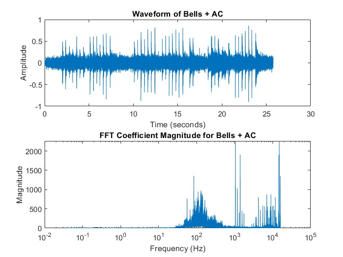
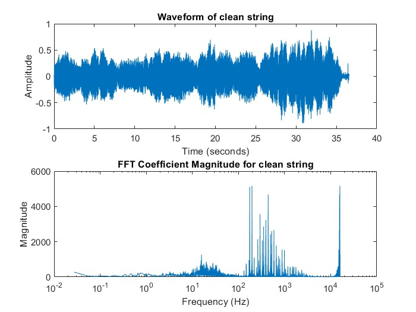
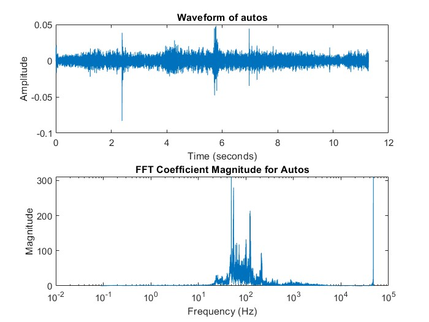
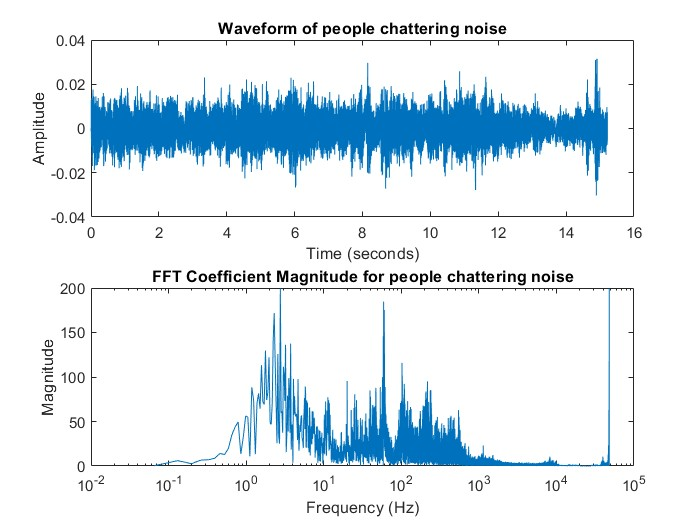
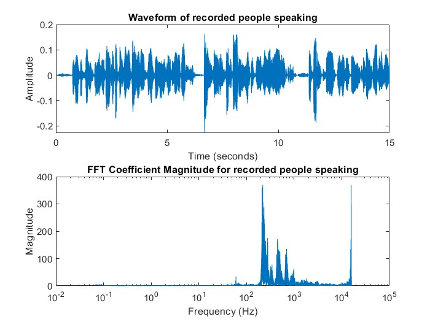
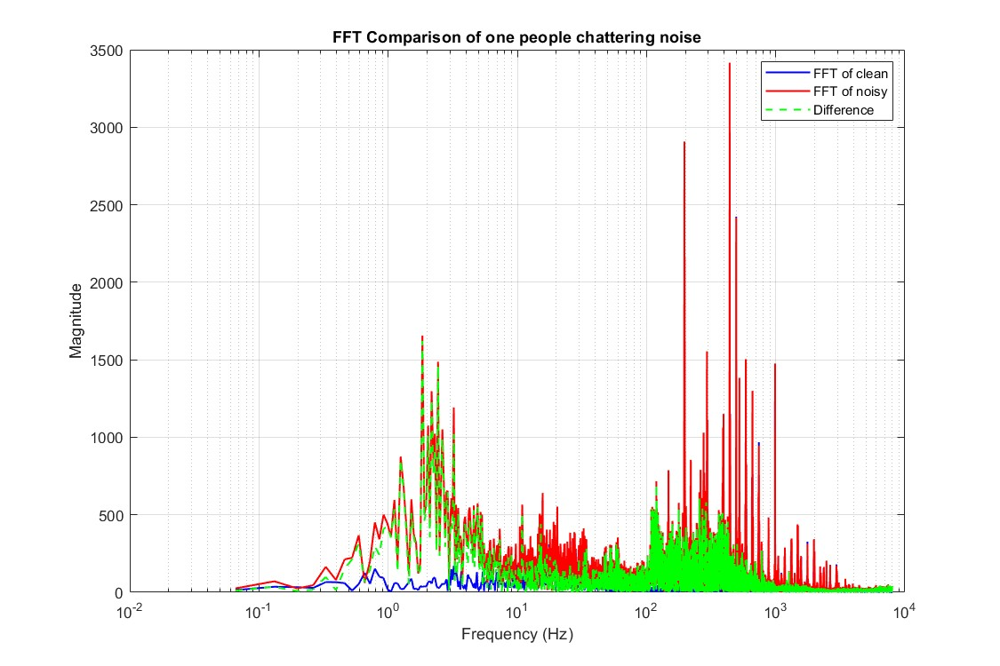
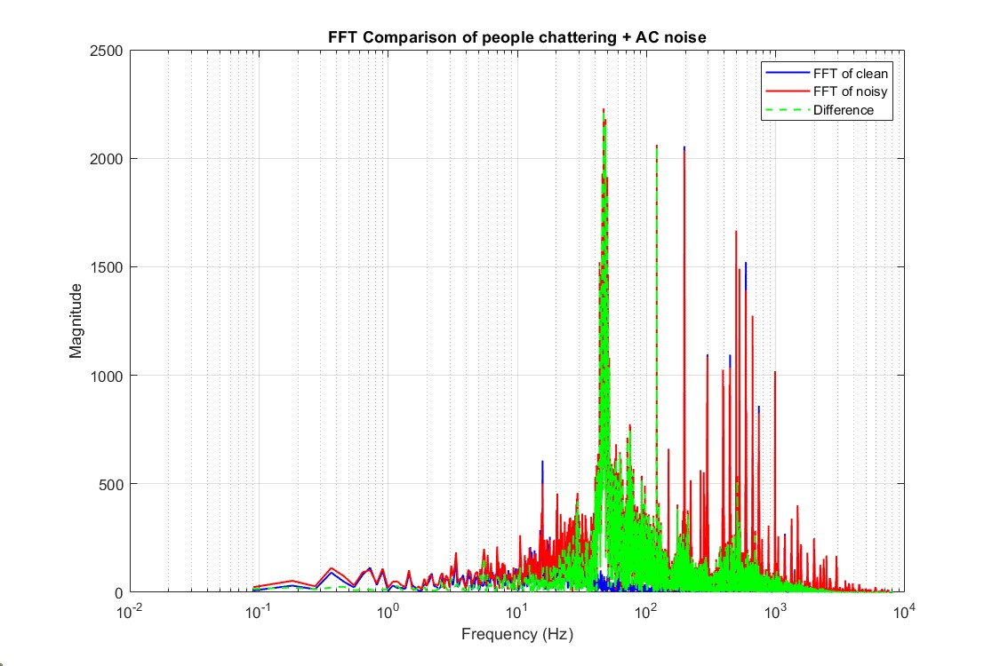

Data
Summarize datasets and any preprocessing.
Our dataset includes:
- Mixed noisy audios recorded by ourselves — Bells + AC, Piano + people speaking, Guzheng + people chattering, Vinyl turntable + mechanical tweaking sound
- Clean audio files — string: violin, viola, cello.
- Noise audio files — people chattering, auto, combined, recorded people speaking
Mixed noisy audios: Bellset & AC

Clean audio files: string

Noise audio files: Auto

Noise audio files: people chattering

Noise audio files: recorded people speaking

Preprocessing
Due to limited resources and uncontrollable factors, we could not record enough mixed audio for the training purpose. Therefore, we utilized the dataset we found online. We used a python script to mix the noise with the clean audios. For each clean track, the script picks one random noise clip from one or multiple separate noise source directories, combines two noises (skip this for one noise case), and overlays the combined noise onto the clean audio files at a randomly selected Signal-to-Noise Ratio (SNR).
Mixed with one noise

Mixed with two noises
